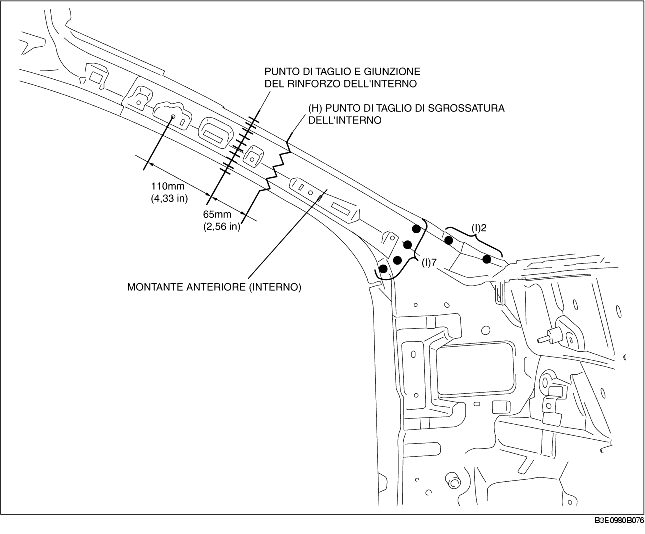

1. Eseguire il taglio di sgrossatura nella zona (A) e forare i 69 punti indicati da (B).
2. Durante la rimozione del montante anteriore (esterno), il pannello della plancia potrebbe interferire con il montante anteriore e causare difficoltà nella rimozione. Pertanto, forare i 2 punti indicati da (C) ed aprire il pannello della plancia verso l'esterno.
3. Rimuovere il montante anteriore (esterno).
4. Eseguire il taglio di sgrossatura nella zona (D) e forare i 10 punti indicati da (E).
5. Forare i 6 punti indicati da (F) dall'interno.
6. Rimuovere il rinforzo del montante anteriore.
7. Eseguire il taglio di sgrossatura (G) e rimuovere il rinforzo del longherone laterale.

8. Eseguire il taglio di sgrossatura nella zona (H), forare i 9 punti indicati da (I), quindi rimuovere il montante anteriore (interno).
